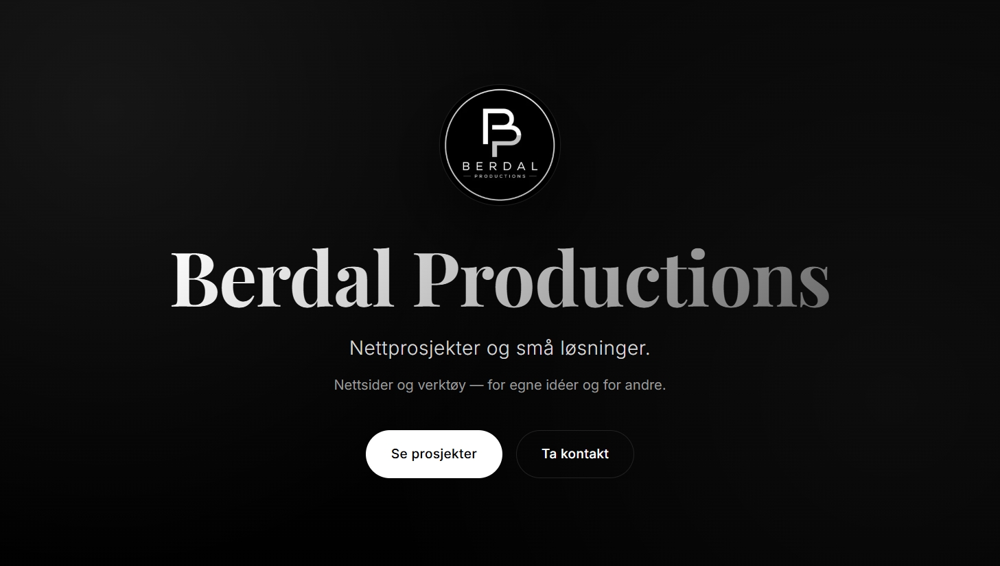

BerdalProductions
Mitt eget enmannsmerke og samlingspunktet for alt jeg lager. Jeg startet det og driver det selv. Jeg designer, bygger og publiserer webprosjekter og apper, både mine egne ideer og prosjekter for andre. Denne siden samler alt på ett sted, med prosjektene mine, tjenestene jeg tilbyr og en måte å ta kontakt på.
Se her